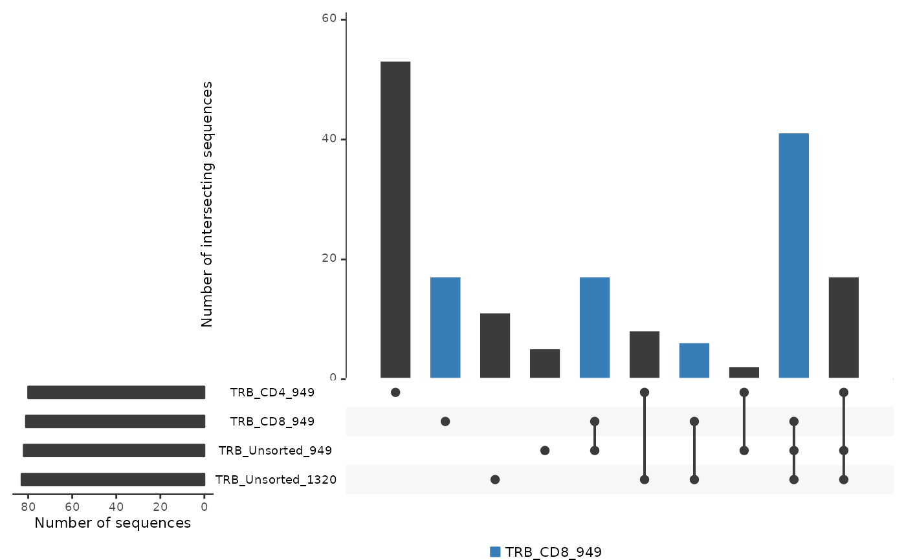

Creates an UpSetR bar plot showing the number of intersecting sequences across multiple repertoire_ids. This function is useful when more than 3 repertoire_ids are being compared.
Usage
commonSeqsBar(
amino_table,
repertoire_ids,
color_sample = NULL,
color_intersection = NULL,
color = "#377eb8",
labels = "no"
)Arguments
- amino_table
A tibble of productive amino acid sequences generated by LymphoSeq2 function productiveSeq where the aggregate parameter was set to "junction_aa".
- repertoire_ids
The names of two or more repertoire_ids in the amino_table list whose intersections will shown.
- color_sample
The name of a single repertoire_id in the amino_table whose sequences will be colored in all repertoire_ids that they appear in.
- color_intersection
The names of two or more repertoire_ids in the amino_table intersections will be colored.
- color
A character vector of a color name that will be used highlight a selected repertoire_id or multiple repertoire_id intersections.
- labels
A character vector indicating whether the number of intersecting sequences should be shown on the tops of the bars.Options include "yes" or "no".
Value
Returns an UpSetR bar plot showing the number of intersecting sequences across multiple repertoire_ids.
Examples
file_path <- system.file("extdata", "TCRB_sequencing", package = "LymphoSeq2")
study_table <- LymphoSeq2::readImmunoSeq(path = file_path, threads = 1)
study_table <- LymphoSeq2::topSeqs(study_table, top = 100)
amino_table <- LymphoSeq2::productiveSeq(study_table, aggregate = "junction_aa")
LymphoSeq2::commonSeqsBar(amino_table, repertoire_ids = c(
"TRB_CD4_949", "TRB_CD8_949",
"TRB_Unsorted_949", "TRB_Unsorted_1320"
), color_sample = "TRB_CD8_949")
